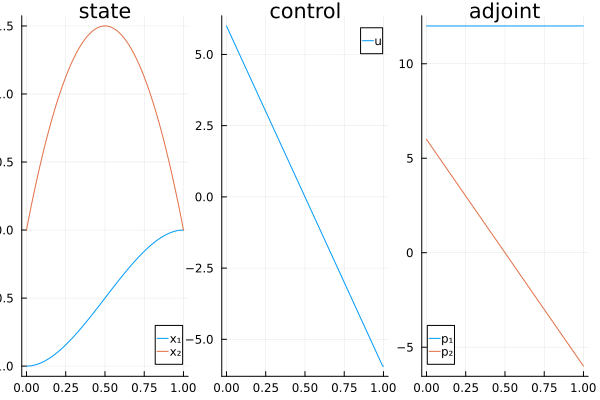

Double integrator - energy min
using CTProblemLibraryThe energy min double integrator problem consists in minimising
\[ \frac{1}{2}\int_{t_0}^{t_f} u^2(t) \, \mathrm{d}t\]
subject to the constraints
\[ \dot x_1(t) = x_2(t), \quad \dot x_2(t) = u(t),\]
and the limit conditions
\[ x(t_0) = (-1, 0), \quad x(t_f) = (0, 0).\]
You can access the problem in the CTProblemLibrary package:
prob = Problem(:integrator, :dim2, :energy)Then, the model is given by
prob.model
Optimal control problem of the form:
minimize ∫ f⁰(x(t), u(t)) dt, over [t0, tf]
subject to
ẋ(t) = f(x(t), u(t)), t in [t0, tf] a.e.,
ϕl ≤ ϕ(t0, x(t0), tf, x(tf)) ≤ ϕu,
where x(t) ∈ R^2 and u(t) ∈ R.
Besides, t0, tf and x0 are fixed.
You can plot the solution.
plot(prob.solution)qt.qpa.xcb: could not connect to display
qt.qpa.plugin: Could not load the Qt platform plugin "xcb" in "" even though it was found.
This application failed to start because no Qt platform plugin could be initialized. Reinstalling the application may fix this problem.
Available platform plugins are: linuxfb, minimal, offscreen, vnc, xcb.
Aborted (core dumped)
connect: Connection refused
GKS: can't connect to GKS socket application
GKS: Open failed in routine OPEN_WS
GKS: GKS not in proper state. GKS must be either in the state WSOP or WSAC in routine ACTIVATE_WS